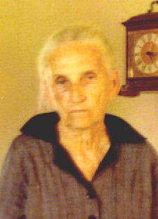

| 
Ada Etta Edwards McNeal |
The
following information on my grandmother's side of the family was provided
to me by a close cousin William (Bill) Howard McNeal, my Aunt Ethel Mae
Cooney, and a distant cousin Tonia Porter...I am deeply in their debt...their
letters and data collected (especially Tonia's hard work) are provided
below. Charles David McNeal
The following is from e-mail from Tonia Porter, grandaughter of Ethel Mae Reddoch:
The Edwards are first found in Pike Co. AL. I don't think any of them moved to Geneva CO., AL until after 1901 (after the death of Wm. Reddoch). But, I think James Reddoch, and James Edwards followed the railroads to Geneva and brought their families then. At least that's what my Grandmother always said.
Her Grandmother, Mary Edwards Reddoch, lived with the family until her death, Ethel ( my grandmother) heard lots of stories growing up. I am not 100% sure that James Edwards is the son of Nancy, but in the 1870 census she did have a boy named James about the same age, with her so that's how I made that conclusion.
He[James], Victoria and Jerry are buried next to Mary in Upper Corner Creek Cem. . Grandma Ethel knew they were family but didn't know exactly how they tied in.... so I put them together in my computer, so I wouldn't "forget" the information!
The information about Thomas and Hannah came off of Mary Reddoch's death certificate and pension application, so that's very accurate. I hope this helps!! Please let me know of any corrections, additions that need to be made!
Your cuz,
Tonia Porter
From: Bill and Faye McNeal To: Tonia Porter Sent: Sunday, July 18, 1999 6:45 PM Subject: Edwards info:
My grandmother's brother, Mack Edwards, was married to Annie Lou Wilson. The person that you have listed as Jesse Pearl, was their oldest daughter, whose nickname was "Sis". Annie Lou Wilson's mothers maiden name was Maggie Bowers. This information was given to me today by my aunt, Ethel Mae Cooney, who lives in Lynn Haven, Fl. Bill McNeal
Descendants of Thomas Edwards Tonia Porter Research
1
Thomas Edwards b: Abt. 1806 in Virginia d: August 12, 1873 in
Bullock
County, Al
..
+Hannah Smith b: Abt. 1827 in Georgia
...
2
Nancy Edwards b: Abt. 1835 in GA
........
3
James Edwards b: February 1864 Fact 1: buried Upper
Corner Creek Cem., Hacoda, Geneva Co., AL
............
+Victoria Gilmore b: May 1865 Fact 1: buried Upper Corner
Creek
Cem., Hacoda, Geneva Co., AL
.............
4
Byrd E. Edwards b: January 1888 d: 1964 Fact 1:
buried
Euchee Valley Cem., Walton Co., Fl Fact 2: lost left arm Fact 3:
employed
by Thomas N Baker Lumber Co
.................
+Tressie Greggs b: May 22, 1902 d: October 15, 1970
.............
4
Jerry Edwards b: January 1891 d: November 09, 1918 in Geneva Co.,
Al
.............
4Ada
Edwards b: March 1893 Fact 1: married
George
D McNeal 1909-1912
.............
4
Carrie Edwards b: February 1896
.............
4
Lila Edwards b: February 1896
.............
4
Robert (Tannyhill) Edwards b: June 1898
.............
4
M C 'Mack' Edwards b: June 19, 1900 d: October 10, 1992 married
Annie Lou Wilson Fact 1: b: Eucheeanna Cem., Walton Co., Fl
.................
+Jessee (Sis) Pearl (Mack and Annie's oldest daughter) b: August 22, 1925
d: July 20, 1991 Fact 1: b: Eucheeanna Cem., Walton Co., Fl
.............
4 Dollie Edwards b: Abt. 1902
.................
+Jesse Dannelly ( I would love to
know more information on this person, because I have Dannellys through
several families!!)
...
2 [1] Mary A. Edwards b: February 10, 1836 in Union
Springs, Bullock County, Al d: June 20, 1925 in Walter Hart
Farm, Walton County, FL Fact 1: buried Upper Corner Creek,
Hacoda, Al Fact 2: lived in Pike Co., Al until 1909 per pension
.......
+James Shields
........
3
Jinnie Shields b: June 20, 1867 d: February 22, 1938 Fact 1:
buried Upper Corner Creek Cem., Hacoda, Geneva Co., AL
............
+Sam Casey
.............
4
Cora Lee Casey b: January 10, 1899 d: May 1984
.................
+Pink Newton Holley b: December 14, 1902 d: August 06, 1950
...
*2nd Husband of [1] Mary A. Edwards:
.......
+William M. Reddoch b: Abt. 1847 in Chambers County, Al d:
March
22, 1901 in Milo,Pike County, Al Father: Kinchen M. Reddoch Mother:
Sarah A. Morris Fact 1: May 16, 1864 joined Co. G of the 63rd reg
of the Al. infantry aka 37th regt Ala Vol Fact 2: wounded in the
right knee Fact
3:
April 08, 1865 captured in Blakely, Al
........
3
James Washington Reddoch b: April 25, 1878 in Pike County, Al
d: June 30, 1966 in Gaskin, Walton County, Fl Fact 1: buried
Gaskin Cemetery
............
+Donie Estelle Merchant b: Abt. 1897 in Alabama d: August 24,
1968 in Chattahoochie, Fl Father: H Jack Merchant Mother: Susannah
Ealum Fact 1: December 12, 1930 4'
11 & 1/4 " weighed 118
.............
4
Louie Madison Reddoch b: February 02, 1913 in Geneva County, Al d:
April 02, 1949 in Walton Co, Fl Fact 1: died in hit and
run accident Fact 2: buried Upper Corner Creek, Hacoda, Al Fact 3:
5' 7 & 3/4" Brown eyes, brown hair, fair complexion
.............
4
Ethel Mae Reddoch b: October 02, 1916 in Hacoda, Geneva
County, Al ( my grandmother)
.................
+Huron A.C. Prescott b: March 07, 1911 in Darlington, Fl d:
June 27, 1950 is buried: Limesprings Cem. Geneva Co. Al Father: General
Columbus Prescott Mother: Susan Parker Fact 1: buried at Limespring
Cem, Geneva Co., AL Fact 2: 5'6" grey eyes, brown hair, 185 lbs on
9-10-1949 Fact 3: twin of Helen
.............
4 Maudie Reddoch b: May 25, 1922 in Whitson Holley
Plantation, Hacoda, Geneva County, Al
.................
+James Hollis Simpler
.............
4
Estelle Reddoch b: September 26, 1924 in Hart Farm, Walton County, Fl
.................
+Reuben Burl Beck Father: D L 'Charlie' Beck Mother:
Emma Alford
.............
4
Dewey Reddoch b: December 26, 1926 in Hart Farm, Walton County,
Fl d: November 02, 1928 in Rameson Farm, Holmes County, FL Fact
1: died of Malaria
........
3 [2] Betsy Reddoch b: September 11, 1880 d: April 25, 1966
Fact 1: buried Upper Corner Creek Cem., Hacoda, Geneva Co., AL
............
+W D Grimes
........
*2nd Husband of [2] Betsy Reddoch:
............
+Jesse Thomas Young b: Abt. 1860 d: March 18, 1927
...
2
Caroline Edwards b: Abt. 1841
........
3 Susan Edwards b: 1864
........
3
Mary Edwards b: 1872
...
2
Manson Edwards b: Abt. 1843
...
2
John Edwards b: Abt. 1846
...
2
Cathrine Edwards b: Abt. 1847
...
2
Martha Edwards b: Abt. 1850
...
2
[3] Henry H Edwards b: Abt. July 1856
.......
+Mary Watson b: 1861 in Florida
........
3
Carrie Edwards b: February 1894
...
*2nd Wife of [3] Henry H Edwards:
.......
+Georgia A M Lee b: Abt. 1856
........
3 Liz Edwards
........
3
Tide Edwards
........
3
John Henry Edwards b: October 20, 1878 in Pike Co, AL d: September
28, 1963 Fact 1: buried Gaskin First Baptist Church, Walton
Co., FL Fact 2: marriage record V-1 Geneva Co.,AL
............
+Millie Alice Griffith b: January 14, 1883 d: September 29, 1959
.............
4 Landrum 'Bunk' Edwards Fact 1:
lived in Crestview for a time
.............
4
Albert Edwards b: February 19, 1907 d: September 02, 1925
Fact 1: buried Eight Mile Baptist Church, Walton Co, Fl
.............
4
Eula Edwards b: November 10, 1908 d: March 05, 1912 Fact 1: buried
Eight Mile Baptist Church, Walton Co, Fl
.............
4
Emmett O Edwards b: December 03, 1910 d: January 13, 1981
Fact 1: buried Gaskin First Baptist Church, Walton Co., FL Fact 2:
died in logging accident
.................
+Estelle Barker b: September 22, 1910 d: August 20,
1987
Father: James B. Barker Mother: Dora Warren Fact 1: buried Gaskin First
Baptist Church, Walton Co., FL
.............
4 John Robert Edwards b: November 18, 1919 d: December
15, 1944 in WWII, KIA Fact 1: buried Gaskin First Baptist
Church, Walton Co., FL
.................
+Ruth Campbell
........
3
Hannah Catherine Edwards b: January 1880
............
+John Nobles b: 1874 Father: John Calvin Nobles Mother: Eliza
Hughes
.............
4
Fanny Nobles b: February 1897
.................
+George E Campbell
.............
4
Mary Nobles b: September 1898
.............
4 Emma Nobles b: Abt. 1903
.............
4
John Nobles b: Abt. 1907
.............
4
Martha Nobles b: Abt. 1908
........
3 Mary E Edwards b: July 1882
........
3
Ida Edwards b: August 14, 1885
........
3
Sarah Ada Edwards b: August 14, 1885
............
+Joseph Lynn